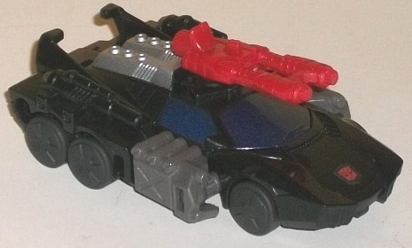
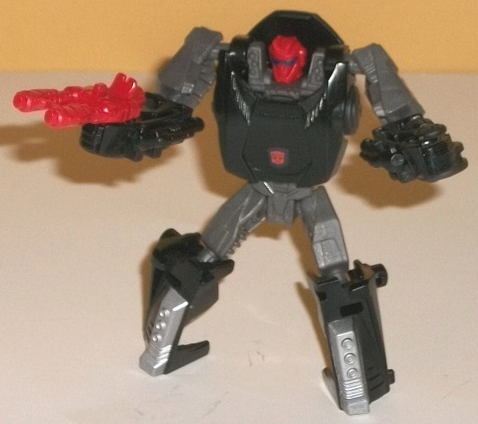
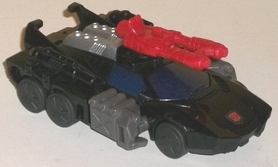
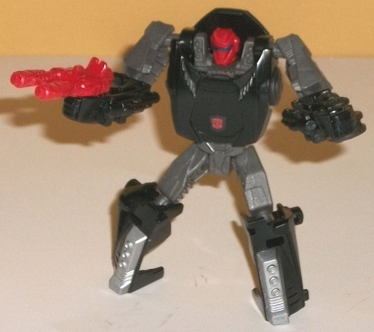
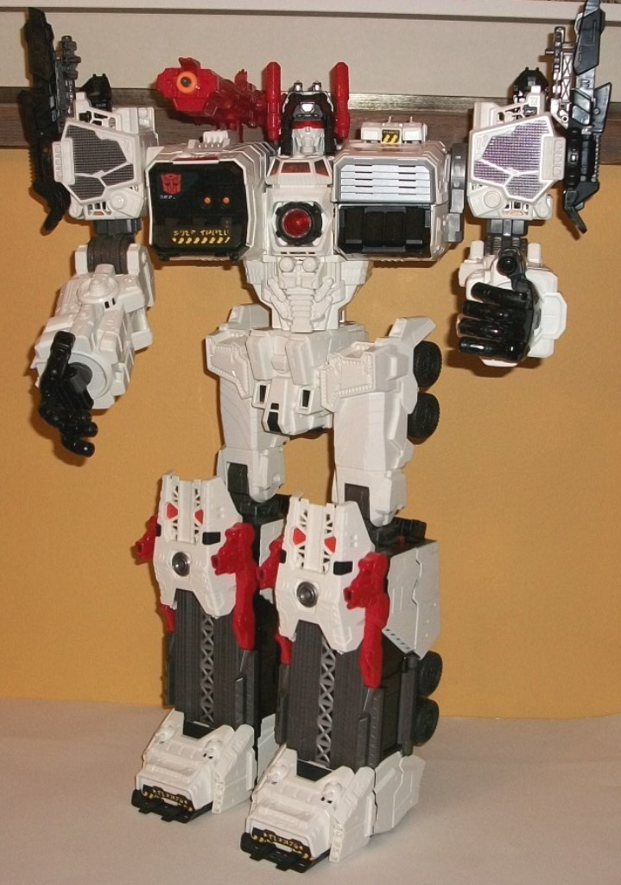
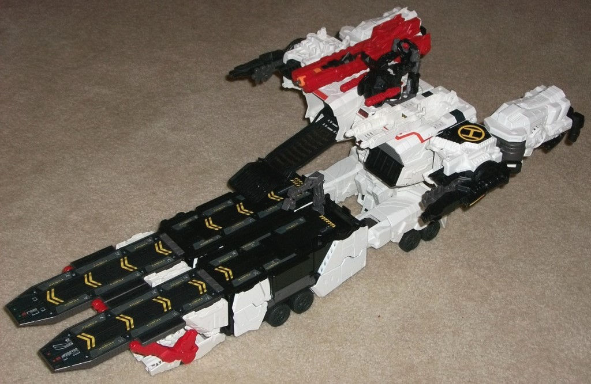
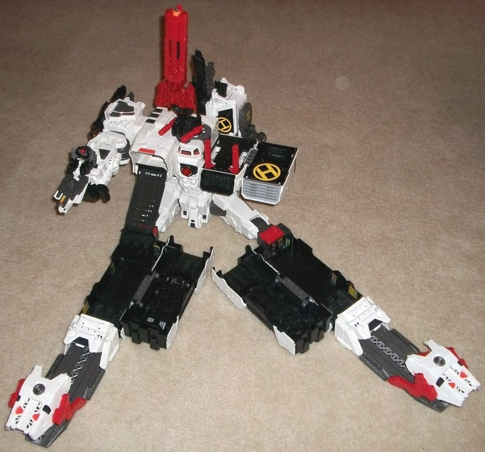

 
Difficulty of Transformation : Very Easy
Color Scheme : Black, milky gray, and some silver, dark metallic silvery blue, dark milky gray, and moderately light red
Individual Rating : 7.6
Allegiances
: Autobot
Size:
Titan (~$125 U.S.)
 Scamper
Scamper


Difficulty of Transformation
: Very
Easy
Color Scheme
: Black, milky gray,
and some silver, dark metallic silvery blue, dark milky gray, and moderately
light red
Individual Rating
: 7.6
Scamper is Metroplex's
little buddy, just like with the G1 toy, and his alternate mode is a slightly
futuristic-looking car (given the six wheels, very angular and sleek windshield,
and exposed tubing on the sides in lieu of car doors). The "bulk" of this
mode looks pretty nice, being a fairly standard car at a scale that roughly
lines up with the larger figure in a Generations Legends 2-pack. There
are two rather large robot mode extras in this mode, however-- namely,
his arms, which just peg into the sides here. If his arms were all black
like most of the rest of this mode, they might have fit in better-- but
with the pieces to the side of his side windows being gray, it makes them
stick out a bit more. The fists on the back sides are also somewhat obvious,
and Scamper has no real rear bumper to speak of-- it's just his fists and
folded-up robot knees. However, those aside, the proportions on the "core"
car mode are quite nice, and the mold detailing is quite impressive. You've
got an exposed engine on the back end, tubes and pipes, and even molded-in
guns on the sides. The guns aren't painted to distinguish them from all
the black, unfortunately, but the windows are painted nicely, as is his
engine. (The Autobot symbol on his hood is a sticker.) Both of these colors
contrast with the black well enough, and the gray plastic on the sides
keeps Scamper from having any one area that is too much one-tone in this
mode. (The red gun stored on top of this mode also helps with the color
breakup.) That said, a LITTLE more of a lighter color would've been appreciated.
On a side note, since it doesn't always happen on toys this small-- yes,
all six of Scamper's wheels are "real" and roll.
Scamper's transformation
is incredibly straightforward, following the largely tried-and-true formula
of the rear halves folding out to become the legs, the front hood becoming
the robot chest, and the arms splitting off from the sides. Scamper's robot
mode largely looks pretty good, and makes a nice little companion piece
to Metroplex. He does have a few minor issues, though-- the biggest being
with his shoulders and arms. His shoulders come out from his main body
at the top of his head, which just looks... weird and like he's a bit hunchbacked.
Also, his lower arms have to rotate at an odd angle that makes them look
too bulky proportionally here. The legs are pretty decent, however, though
I wish the feet were stuck out a little more-- but he's reasonably stable,
regardless. The mold detailing on his robot head and little "missile pods"
on his shoulders is very well-done, and the painted "sunglasses"-like visor
on the face-- along with it being the only red part in this mode-- really
gives him character and makes his head stand out. Unfortunately, the "sunglasses"
is the only paint app that's exclusive to his robot mode. He's got the
engine-feet painted silver, sure, but without the more well-spread-out
paint apps from his vehicle mode, Scamper looks awfully dull in this mode,
largely being just black and two different shades of milky gray-- very
monochrome. For articluation, Scamper can move at the neck, shoulders,
elbows, hips, and knees-- all of which are on ball joints, so this gives
him a fuller range of motion than you'd think, though I wish he also had
waist rotation. As you'd expect, Scamper can hold his gun in either of
his fist holes in this mode, though the fists are also sized to hold any
weapon with a 5mm handle-- like a Generations Legends weapon triple-changer,
for example.
 Metroplex
Metroplex


Difficulty of Transformation to Base
Mode
: Medium
Difficulty of Transformation to Mobile
Fortress Mode
: Easy
Difficulty of Sticker Application
:
Hard
Color Scheme
: White, black, dull
red, moderately dark milky gray, and some transparent cherry red, yellow,
light orange, silver, and metallic gunmetal gray
Individual Rating
: 7.4 (mass retail
version); 7.5 (SDCC 2013 exclusive version)*
Well, I'd never thought
we'd get to this point. Did you? A toy of Metroplex that's actually BIGGER
than the G1 Fortress Maximus toy? Yowza. (Though Fortress Maximus still
holds the title as the HEAVIEST individual TF-- Metroplex is definitely
lighter and hollower than that G1 toy.) As opposed to most of my reviews,
I'll start with Metroplex's robot mode first, since so many of my comments
on his alt modes relate back to his robot mode anyways. Generations Metroplex
is MASSIVE and looks VERY good in this mode, with proportions well befitting
a Titan like himself, what with very broad shoulders, a thin waist, and
then big stompin' boots for feet. His hips do stick out from the sides
of his waist in a very inhuman manner, but given that it probably gives
him better stability, I don't mind them. There isn't really any alt mode
"extras" in this mode-- Metroplex has a pretty kibble-free form. His color
scheme of mostly white, black, and red with some gray is very Autobot-y
and fits a cityformer like him well, even if it isn't the most exciting
in the world. Metroplex is (mostly) covered with excellent mold details,
from little (non-movable) turrets on his feet to gear-like details in his
joints to missile pods and everything. His midsection is particularly well-detailed
in this respect, with pistons and grooves making them look like some sort
of mechanical abs. His headsculpt is VERY cool and spot-on, and you can
opt to have his visor either down or up with the by flipping his helmet
forward and back. The paint detailing, to be honest, is a little sparse--
his entire lower arms and upper legs have no paint apps at all, and on
a toy this big it gets fairly noticeable. He does have some nice white
paint apps on the sides of his legs to help blend the plastic colors in
better, and a few large gunmetal gray paint apps. However, he DOES have
a fair amount of details, in the form of a MASSIVE sticker sheet for you
to place on him in lieu of paint, likely to keep his price down. Seriously,
be prepared to spend a LOT of time stickering up this dude (he's got over
100 individual decals, and some of them are a bit difficult to get right
since they're in recessed areas). The instruction sheet tells you where
to put all of them, but it is incorrect in its placement of a few, which
will only add to the confusion. Yeah, it's a pain, but once you're done,
you're done. Some of the stickers are pretty cool little details, too--
my favorites are the yellow "Warning" signs in Cybertronian and the stickers
that show Optimus and Co. inside the windows underneath Metroplex's head,
demonstrating the sheer scale he's supposed to be. Metroplex comes with
three big honkin' guns in this mode-- the two black ones can store on his
shoulders or be placed into either of his hands, and his large red one
(which fires a spring-loaded missile) can sit into place on either his
right shoulder or can also be held firmly in either hand. For articulation,
Metroplex can move at the neck, head-mounted cannons, the PUPILS (yes,
there's a little slider in the back to move his pupils-- it's insane),
and at the shoulders (at two points), elbows (at two points), wrists, at
the base of each individual thumb and finger on each hand, at the waist,
the hips (at two points), and the knees (at two points). All joints can
hold their weight quite well, at least in this mode. Really, he's extremely
articulated (as he should be at this size/price point), with the only missing
point being ankles-- but at this size/weight, ankle tilts might actually
make him a little LESS stable, so I'm okay with that. For his electronic
gimmick, pressing down on the small cockpit-area below his head causes
the red circle in his chest and his eyes (this is when you can see the
pupils) to blink off-and-on a few times while he says one of the following
(all taken from the
Fall of Cybertron
video game):
"Target obliterated"; mechanical transforming sounds; "These Decepticons
scatter like cowards"; "'Til all are one"; "Metroplex heeds the call of
the last Prime"; "Foolish Decepticons"; "Decepticon Deactivation Commencing";
and "Target synchronizing initiated". It's a pretty darned awesome gimmick
that really doesn't interfere with the toy in any real manner, and I LOVE
Metroplex's voice, so I really am digging this use of electronics.
Metroplex's "Mobile
Fortress" mode has some good points about it, but also a fair amount of
bad ones. Regarding the bad-- his arms just stick out on the rear blatantly
(VERY blatantly, given the size). His waist and upper legs also don't even
really attempt to cover themselves up in this mode, and although they did
well enough for robot mode poses, the knee and ankle ratchets aren't QUITE
firm enough to hold the extended unfolded legs by themslves-- you need
to keep this guy on the ground if you want this mode to remain stable.
I like that the Metroplex head folds forward to give smaller TFs a place
to stand and wield his turret-antennae, but it's incredibly obvious that
it's his head collapsed in on itself a bit. Frankly, he looks less like
a fortress and more like him sitting down in a weird position with his
legs unfolded. Still, those unfolded legs are a pretty solid part of this
mode, having really nice "landing/take off lane" sticker details on them,
a fold-out crane arm with four points of articulation and an opening/closing
maw on the end of it, a ramp that extends downwards from his chest to said
landing pads, and the left side of his upper chest flips forward to give
him another area for an Autobot to man a turret (unlike the head-turret,
this one doesn't rotate, though). His large shoulder-guns also face forward,
giving him oodles of firepower in this mode. It makes for a fair amount
of nice interactivity with the more regular-sized figures in the Generations
line, but particularly the Legends-class ones. That's about the biggest
plus to this mode-- and for a toy this expensive, I wish that the biggest
plus to the alt modes was the solidity/believablity of the alt mode more
than interactivity with other toys (though the latter is certainly important).

Metroplex's city mode
is the stronger of the alt modes, but only slightly-- it's still way too
obvious it's Metroplex in a weird position, given his right arm blatantly
jutting forward and the same issues of the obvious waist/hip and head carrying
over to this mode as well. This is a bit like his fortress mode, but even
more unfolded-- Metroplex takes up a TON of real estate in this mode, to
the point where he's not going to fit on ANY shelf here. His legs unfold
even more, hiding the airstrips from fortress mode and unveiling two large
black cavities inside of his legs for robots to... sit in, I guess? I mean,
there's some stickers you put in here that show things like computer readouts
and panels, but it's not really apparent what exactly these places are
FOR-- they don't look like anything except just his hollowed out lower
legs. I do love the way the feet, knees, and front of the lower legs all
line up and fold open to create a bit of an "entryway" for smaller figures
in vehicle mode to roll into Metroplex's leg cavities, though. (Make sure
you flip in those foot sole ramps before transforming him again, though,
of you could bend the plastic of those parts quite a bit.) His chest-ramp
is still out in this mode, and his right arm has another (non-rotating)
gun emplacement flip open, though it's still obviously an arm. His left
arm fares better, folding behind his back to resemble a "skyscraper" along
with his red gun being pointed upwards, the latter of which is pretty ingenious.
The left side of his chest than unfolds into a nice-looking helicopter
landing pad, and a couple of fold-up... red bars? I'm honestly not sure
what those things are supposed to be for.
Generations Metroplex & Scamper is definitely for the hardcore Transformers fan, given the expensive price and the requirement that you have a lot of other TFs if you want to get the most play value out of this big guy (though the inclusion of Scamper helps a little in this respect). Metroplex's robot mode is absolutely incredible and all I've wanted from a cityformer robot mode, but unfortunately they stuck a bit TOO close to the G1 toy in respect to the alt modes. There's a few genuinely creative ideas-- such as the landing strips from the lower legs in mobile fortress mode and the helicopter pad and "skyscrapers" in city mode-- but generally, his alt modes are just way too obviously his robot mode twisted in a different position, without enough "solidity" to them to make them believable. The lack of his hips and knees being able to keep up the weight of his extended legs in his alt modes is also a major bummer, too. If you've been wanting a big, expensive titanic Transformer and have lots of smaller TFs, this is definitely worth a pickup simply because of the robot mode, the relatively cheap price given the huge size, and all the interactivity-- but his alt modes are mediocre, at best.
Reviews by Beastbot
*For San Diego Comic-Con 2013, a "special edition" of Metroplex was released, in which he got an extra red gun, chrome thighs and face, and a bunch of little unpainted rubbery-plastic red and purple Autobot and Decepticon mini-figures that are roughly in scale with him. The chrome I find gaudy, and this version is even more expensive than his mass retail version-- but the extra gun and little mini-figures make him a slightly higher recommendation than the mass retail version.